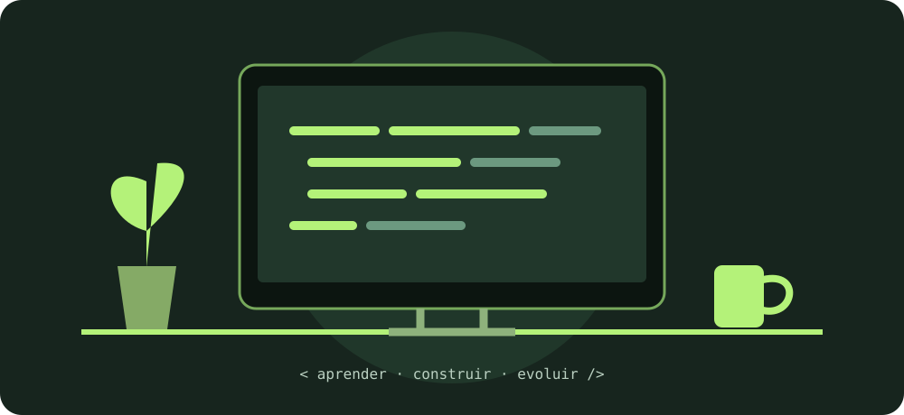

03 / MULTIMÍDIA
A web também é
imagem e som.
Uma pequena experiência sobre os elementos que tornam uma interface mais expressiva.

EXPERIMENTO SONORO
Um toque de tecnologia.
Ouça uma sequência curta de notas produzida no próprio navegador. A reprodução começa apenas quando você escolhe.
Duração: aproximadamente 2 segundos. Sem reprodução automática.
COMO FOI FEITO
Leve por natureza.
A imagem usa SVG: formas vetoriais que mantêm a nitidez em diferentes telas. O áudio usa a Web Audio API para gerar notas sem baixar arquivos.
Tudo funciona sem bibliotecas externas ou arquivos binários versionados.